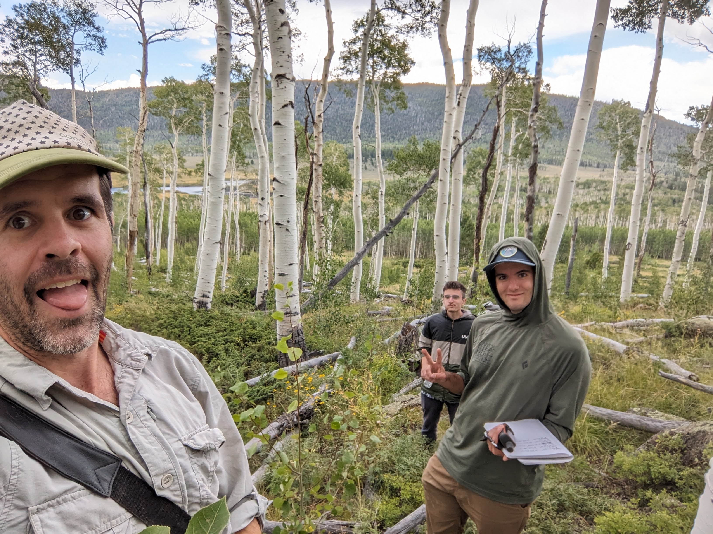
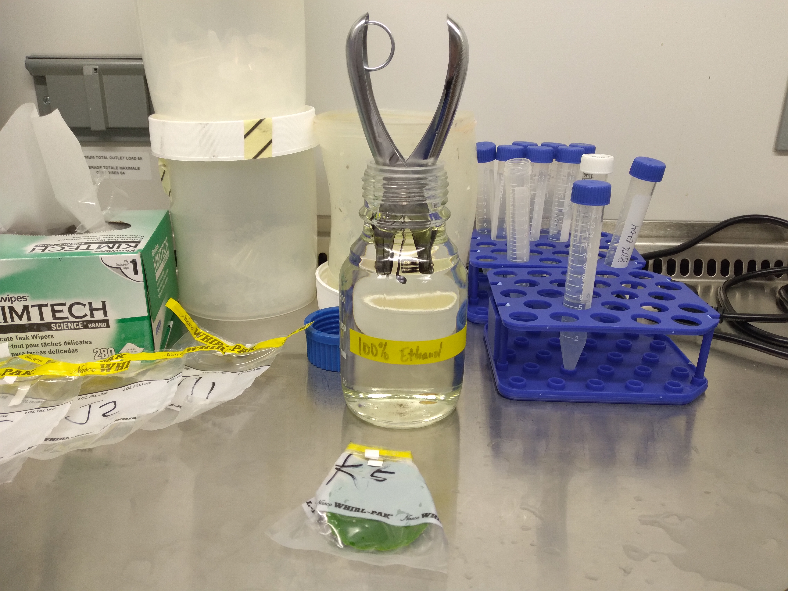

Genomic Hyperreality: Cultural Forces in Biological Preservation
Honors Capstone Thesis (Expected Fall 2025)
This interdisciplinary research explores how human cultural narratives and memetic forces may shape biological futures through genomic preservation and de-extinction technologies. The project examines the collapse of distinction between genetic and cultural evolution, applying frameworks from the post-structural philosophers Baudrillard and Foucault to emerging biotechnology capabilities. It investigates how species’ cultural significance may increasingly determine their biological reality in an age of high biological control by humanity.
Evaluating different methods to identify changes in the gut microbiota - lessons from alcohol-exposed Drosophila melanogaster
This project explores different methodologies to detect changes in the gut microbiota of Drosophila melanogaster exposed to alcohol. My contribution during the IQBIO 2024 REU at UPRRP involved writing and optimizing code in R to analyze and visualize diversity in ONT microbiome data, helping the team generate insights into the effects of alcohol on the gut microbiota.

Spatial Dynamics of Foliar Fungal Community Structure in the Pando Aspen Clone
(Ongoing, but here is some more general information on Pando)
We are looking at the epiphytic and endophytic fungal communities of the the world’s largest tree. We’ve collected samples from 2023 and 2024.


